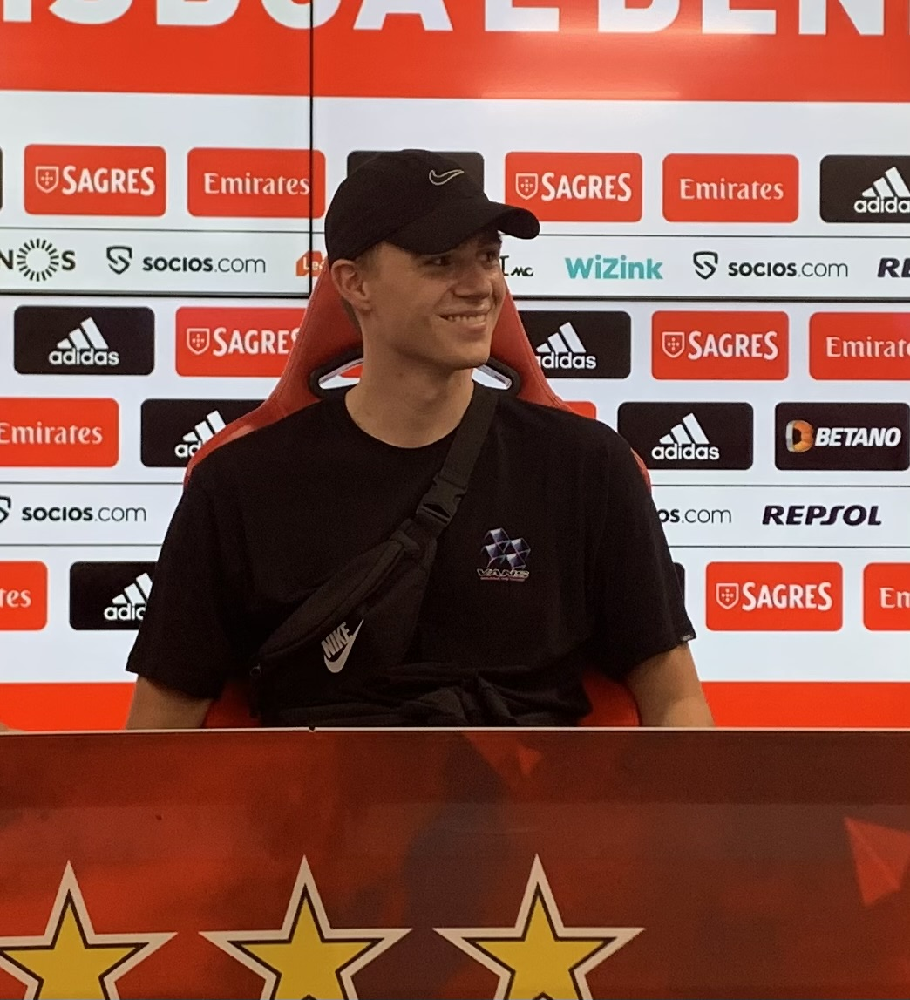

Week 9 & 10
Tijdens deze weken werkte ik verder aan projecten voor klanten en kreeg ik de kans om meer mee te werken aan de eigen website van Two Of A Kind.
Lees blogpost
Stageblog
Overzicht van mijn updates tijdens de stage.
Tijdens deze weken werkte ik verder aan projecten voor klanten en kreeg ik de kans om meer mee te werken aan de eigen website van Two Of A Kind.
Lees blogpostTijdens deze weken werkte ik verder aan verschillende projecten voor klanten en kreeg ik de kans om ook mee te werken aan de eigen website van het bedrijf.
Lees blogpostTijdens deze weken werkte ik verder aan projecten voor verschillende klanten en verdiepte ik mijn kennis van WordPress en Elementor.
Lees blogpostTijdens deze weken werkte ik verder aan verschillende projecten met WordPress en Elementor en begon ik opnieuw met het maken van designs in Figma.
Lees blogpostIn deze eerste weken werkte ik aan website designs in Figma en werkte ik ze uit in WordPress met Elementor. Daarnaast maakte ik kennis met het team en de werkomgeving.
Lees blogpost